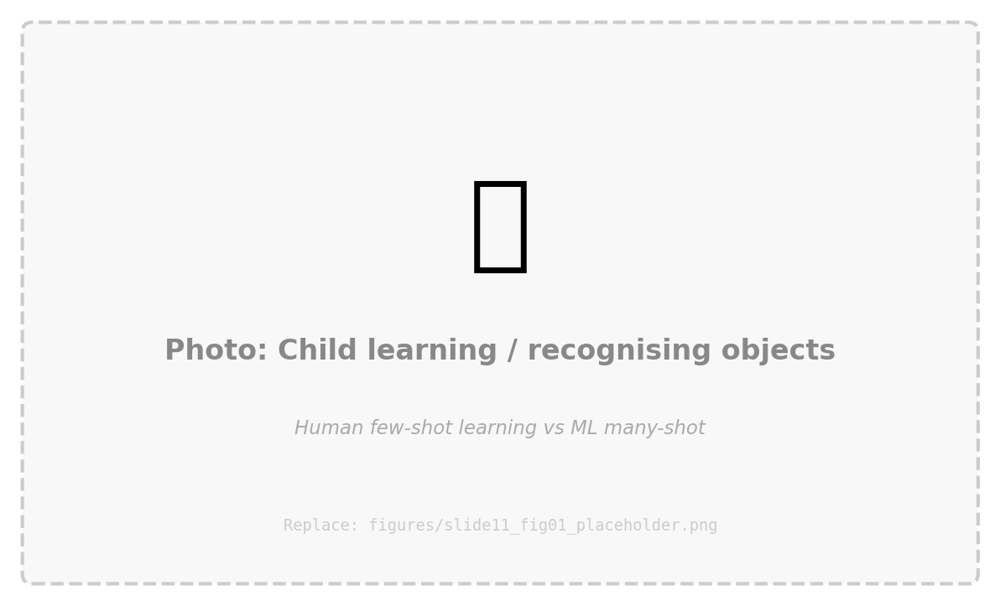

Welcome
- This course is about learning to use modern computational tools — machine learning and AI — to ask and answer questions about human behaviour
- You'll work with real data, build real models, and interpret real results
- You don't need any coding or technical background
- Seriously — 99% of students who take this course have never written a line of code
- You'll use AI assistants to help you write code, and learn by doing
- Describe what you want in plain English → the AI writes the code → you verify and refine
- The goal: become a researcher who can use powerful new tools thoughtfully and critically
- Not a software developer — a psychologist with a bigger toolbox
How This Course Works
Lecture Weeks
Weeks 1, 3, 5, 7, 9, 11
- Student presentations (~30 min)
- Pairs present their lab challenge results from the previous week
- Lecture (~60 min)
- New concepts, demos, discussion
- Discussion + Q&A (~30 min)
- Open questions, preview of next lab
Lab Weeks
Weeks 2, 4, 6, 8, 10
- Challenge briefing (~15 min)
- Instructor walks through the brief and dataset
- Hands-on lab time (~90 min)
- Work in pairs with LLM coding assistants
- Wrap-up (~15 min)
- Prepare 1-slide presentation for next week
Today's Agenda
- What are AI and machine learning? — definitions, relationships, the big picture
- A brief history — from Turing to ChatGPT to today
- The AI tools landscape in 2026 — what's available to you right now
- Prompt engineering — the most practical skill you'll learn this semester
- The LLM Problem-Solving Loop — your core workflow all semester
- ML in psychological science — real research examples
- Getting ready for Week 2 — setup homework
What Are AI and
Machine Learning?
Definitions, relationships, and the key distinction
Artificial Intelligence AI
The broad field of building systems that can perform tasks that typically require human intelligence
- Recognising faces in photos — even in different lighting, angles, or expressions
- Translating between languages — with awareness of context and idiom
- Having a conversation — answering questions, explaining concepts, debating ideas
- Driving a car — perceiving the environment and making real-time decisions
The common thread: tasks where there's no fixed set of rules a programmer can write down — the system needs to handle ambiguity, variability, and complexity.
Machine Learning ML
A subset of AI where systems learn patterns from data instead of following rules written by a programmer
- Show the system thousands of examples — "here are photos labelled 'dog' and 'not dog'"
- The more examples, the better it learns (usually)
- It figures out the rules on its own — discovers which features distinguish dogs from cats
- Ear shape? Snout length? Fur texture? The model decides what matters
- No programmer needs to anticipate every possible case
- The model generalises from examples it's seen to examples it hasn't
Deep Learning DL
A subset of ML that uses neural networks — layers of mathematical operations loosely inspired by how neurons in the brain process information
- Multiple layers ("deep") allow the model to learn increasingly abstract features
- Layer 1 might detect edges → Layer 2 detects shapes → Layer 3 detects faces
- Powers most of the impressive AI in the news — image recognition, language translation, game-playing
- Requires large amounts of data and computing power to train
- Training GPT-4 reportedly cost over $100 million in compute
Generative AI GenAI
AI systems that can generate new content — text, images, code, audio, video — based on what they've learned from vast amounts of training data
- Text: ChatGPT, Claude, Gemini — write essays, explain concepts, have conversations
- Images: DALL-E, Midjourney, Stable Diffusion — create images from text descriptions
- Code: GitHub Copilot, Cursor — write and debug software
- Audio & Video: ElevenLabs, Sora — synthesise speech, generate video clips
This is the subset you've probably interacted with most — and the one we'll use throughout this course.
How They Relate
Each layer is a subset of the one above it — GenAI is a type of Deep Learning, which is a type of ML, which is a type of AI.
A Psychology Analogy
Humans learn from examples too — a child doesn't memorise a rule book for recognising dogs. They see enough dogs and gradually learn the pattern. ML formalises this same idea mathematically.
But here's a striking difference: A child learns to recognise dogs from maybe 3–5 examples. A typical ML model needs thousands or millions.
Why are humans so much more data-efficient? We bring a lifetime of embodied experience, prior concepts, and structured knowledge to every new learning task.
This efficiency gap is one of the deepest open questions in cognitive science and AI — and it tells us that whatever humans are doing when they learn, it's not the same thing current ML models are doing.
Few-Shot vs Many-Shot Learning
Replace with: illustration comparing human few-shot learning with ML many-shot learning
Traditional Programming vs Machine Learning
Traditional Programming
Computer follows rules
Machine Learning
Computer discovers rules
The Key Distinction
In traditional programming, a human writes rules → computer follows them.
In machine learning, a human provides data + a goal → computer discovers the rules.
This shift is what makes ML so powerful for research — it can find patterns in data that humans might never think to look for.
But it also means we need to be careful: finding a pattern doesn't mean understanding it. That's where your training as a psychologist becomes essential.
A Brief History of AI
From Turing to transformers to today
The Roller-Coaster Ride of AI
"Can machines think?"
encode human rules
hype → disappointment
change everything
ImageNet → modern era
- 1950s–60s: "We'll have human-level AI in 20 years!" — wildly optimistic. Early programs could solve logic puzzles, but the real world proved far more complex than anyone expected.
- 1980s: Expert systems tried to encode human knowledge as explicit rules — too brittle, couldn't handle the messiness and ambiguity of real-world problems.
- 1990s: Cycles of hype and disappointment led to "AI winters" and funding cuts. But researchers quietly kept working on statistical and neural approaches that would later prove transformative.
- 2000s–2012: Big data + cheap GPUs + better algorithms = game changer. In 2012, deep learning won ImageNet by a massive margin, and the modern AI era began.
The Pace of Change: 2017–2026
architecture
launches
+ coding assistants
agentic AI
everyday research
- 2017: "Attention Is All You Need" introduces the transformer architecture — the foundation of every modern large language model (LLM)
- 2022: ChatGPT launches — millions discover what LLMs can do literally overnight. The public conversation about AI changes permanently.
- 2023–24: Multimodal models arrive (text + images + audio in one system), plus AI coding assistants, image and video generation tools
- 2025: "Vibe coding" goes mainstream (describe what you want → AI writes code), deep research tools, and the first generation of truly agentic AI systems
- 2026: AI tools are now embedded in everyday research and professional workflows — including this course
Most of the AI tools you'll use in this course didn't exist two years ago. The pace of change is unprecedented.
The AI Tools Landscape
in 2026
What's available to you as a researcher right now
Conversational AI & Deep Research
- ChatGPT (chat.openai.com), Claude (claude.ai), Gemini (gemini.google.com)
- Not just chatbots anymore — they reason, write, code, and analyse data
- Deep Research modes (ChatGPT & Gemini) — the AI autonomously searches, reads, and synthesises information across many sources
- Like having a research assistant who can read dozens of papers and summarise them for you
- Genuinely useful for literature reviews, understanding new methods, exploring how a technique has been used across fields

Replace with: screenshot of ChatGPT/Claude deep research
Foundation Models & Model Sizes
These tools are powered by foundation models — large neural networks trained on massive data that can be adapted to many tasks.
OpenAI
GPT-5 (Aug 2025)
GPT-5.2 (Dec 2025)
Models: GPT-4o mini → GPT-5
Gemini 3 (Nov 2025)
Gemini 3 Deep Think
Models: Flash → Pro → Ultra
Anthropic
Claude Opus 4.6 (Feb 2026)
Sonnet 4.5, Haiku 4.5
Models: Haiku → Sonnet → Opus
Model "Flavours"
Each company offers different sizes. Larger models reason more carefully but are slower and cost more. Smaller models are faster and cheaper. A practical tradeoff you'll encounter.
Training vs Inference
Training = building the model (months, millions of dollars). Inference = using the model to generate a response (seconds, fractions of a cent). We'll cover this in Weeks 9–10.
Mixture of experts (MoE): Rather than activating the entire network for every input, MoE models route to specialised sub-networks — large capacity, fast inference. Used in GPT-5, Gemini 3. More in later weeks.
Multimodal AI
Modern AI models aren't limited to text — they can see, hear, and generate across multiple types of media simultaneously.
Vision
Upload a photo and ask questions about it. "What's in this brain scan?" "Describe this graph."
Audio
Speak to the AI and hear it respond. Real-time voice conversations with natural intonation.
Documents
Upload PDFs, spreadsheets, papers. "Summarise this paper." "What are the main findings?"
Examples: GPT-5 (text + image + audio), Gemini 3 (natively multimodal), Claude (text + image + documents). These can process research papers, analyse figures, transcribe interviews, and more — all in one conversation.
Coding Assistance & Vibe Coding
- GitHub Copilot (github.com/features/copilot) — AI inside VS Code, suggests code as you type, answers coding questions
- Free for students via the GitHub Student Developer Pack
- AI-native code editors — Cursor and Windsurf build AI into every part of the coding workflow
- Edit, refactor, and debug across entire projects through conversation
- "Vibe coding" — describe what you want in plain English, AI writes the code
- Term coined by Andrej Karpathy (OpenAI founding member), February 2025
- But pure vibe coding is passive — copy-paste and hope for the best
- In this course, we want something more deliberate: AI as active collaborator
- CLI coding agents — AI that works directly in your terminal, reading your codebase and editing files autonomously
- Claude Code (Anthropic), Codex CLI (OpenAI), Gemini CLI (Google, open source)
25% of Y Combinator Winter 2025 startups had 95% AI-generated codebases. This is already mainstream.
AI as Collaborator, Not Autopilot
Passive (Vibe Coding)
- Describe what you want
- Copy-paste whatever the AI gives you
- Hope it works
- No understanding of the code
Active (This Course)
- Read the code the AI generates
- Understand what it does and why
- Ask questions when something doesn't make sense
- Develop judgement about when output is good vs not
You're not accepting whatever the AI produces — you're working with it, steering the process, and learning along the way.
We'll formalise this into the LLM Problem-Solving Loop later in this lecture.
Open-Source Models & Local AI
Not all AI has to live in the cloud. Open-source models can be downloaded and run entirely on your own computer.
Leading Open-Source Models
- Llama 4 (Meta) — Scout & Maverick variants, MoE architecture
- Mistral Large 3 (Mistral AI) — 675B parameters, Apache 2.0 licence
- Gemma 3 (Google) — smaller, efficient, designed for local use
Tools to Run Them
Hardware Has Caught Up
Apple M4 Max/Ultra: up to 192GB unified memory. NVIDIA/AMD GPU systems with high VRAM. A well-configured MacBook Pro or desktop can run useful AI models entirely offline.
Why Run Locally?
Data privacy. Your data never leaves your machine. No API calls, no external logs. Essential for sensitive clinical data, patient records, or proprietary datasets where ethics approvals restrict external processing.
Image Generation
Describe an image in words → AI creates it. Text-to-image generation has become remarkably capable.
DALL-E 3
Built into ChatGPT. Describe what you want, it generates images. Great for creating stimuli, illustrations, and diagrams.
Midjourney
Known for artistic, high-quality outputs. Popular for creative and stylised images. midjourney.com
Stable Diffusion
Open-source — runs on your own computer. Full control, no usage limits, highly customisable.
Adobe Firefly
Integrated into Photoshop and creative tools. Designed for professional creative workflows.
For research: creating experimental stimuli, visualising concepts, generating figures for presentations. Always disclose AI-generated images.
Video, Audio & Speech
Video Generation
- Sora (OpenAI) — text-to-video, realistic scenes from descriptions
- Runway, Pika, Google Veo — rapid advances in quality and control
- Still early, but improving very fast
Text-to-Speech
- ElevenLabs (elevenlabs.io) — natural-sounding voices, voice cloning
- OpenAI TTS — built into ChatGPT Advanced Voice
- Applications: accessibility, narration, creating audio materials
Speech-to-Text
- Whisper (OpenAI) — highly accurate transcription, open-source
- Built into most LLMs now — talk instead of type
- For research: transcribing interviews, coding spoken data, accessibility
NotebookLM (notebooklm.google.com) can even generate podcast-style audio overviews of your uploaded papers — two AI voices discussing the content in an engaging way.
AI Research Tools
NotebookLM
Upload papers, get summaries, interactive mind maps, audio overviews. Built on Gemini.
notebooklm.google.comElicit
Synthesises evidence from 200M+ academic papers. Ask a question, get structured evidence.
elicit.comConsensus
Ask research questions in plain language, get answers backed by peer-reviewed literature.
consensus.appSemantic Scholar
AI-powered paper discovery, citation networks, research recommendations. 200M+ papers.
semanticscholar.orgThese are genuinely useful for your coursework and research. Try them out — most have free tiers.
Agentic Systems The Frontier
AI that doesn't just answer questions — it can plan, act, and iterate to complete complex tasks autonomously.
- Tools — agents can use web search, code execution, file management, databases
- Skills — specialised capabilities like data analysis, writing, or research
- Autonomy — break tasks into steps, execute, check work, adjust approach
- Multi-agent systems — multiple specialised agents collaborating on a task
- New protocols: Anthropic's MCP, Google's A2A
How Big Is This?
Gartner: 40% of enterprise apps will have AI agents by end of 2026. McKinsey: 1,445% surge in multi-agent inquiries.
Example: A coding agent reads your project, writes code across multiple files, runs the tests, fixes failures, and commits — all from a single instruction.
We'll explore agentic AI in depth in Week 11.
Tools Augment, Not Replace
A hammer doesn't build a house by itself.
A skilled carpenter with a hammer builds better houses faster.
That's the relationship we want you to develop with AI tools.
You are the researcher. AI is your tool. Your expertise, judgement, and critical thinking are what matter most.
Prompt Engineering &
Context Engineering
The most practical skill you'll learn this semester
Prompt Engineering
The art of writing clear, effective instructions for an AI. A vague prompt gets a vague answer. A specific, well-structured prompt gets useful output.
Your ability to get good results from AI tools depends almost entirely on how you communicate with them.
This isn't a "nice to have" — it's the difference between spending 2 minutes and 20 minutes on a task.
Let's look at some examples...
Example 1 Data Visualisation
Vague
"Make me a graph"Specific
"Create a scatter plot of Depression score vs Sleep hours from my DataFrame calleddata, with points coloured by Gender, using matplotlib. Add a title, axis labels, and a legend."
Why it works: Specifies the plot type, the variables, the data source, the colour coding, the library, and the formatting. The AI knows exactly what to produce.
Example 2 Debugging Code
Vague
"My code doesn't work, fix it"Specific
"I'm getting a KeyError: 'depression_score' when I rundata['depression_score'].mean(). Here are my column names: Age, Gender, Depression, Sleep_hrs. I think the column might be called something different. How do I fix this?"
Why it works: Includes the error message, the code that caused it, the actual column names, and a hypothesis about what went wrong. The AI can pinpoint the issue immediately.
Example 3 Understanding a Method
Vague
"Explain random forests"Specific
"I'm a psychology honours student learning ML for the first time. Explain random forests in simple terms, using a psychology example (like predicting treatment outcomes). Compare it to regular regression, which I'm familiar with. Keep it under 300 words."Why it works: States your background, requests a relevant example, anchors to something you already know, and sets a length constraint. The explanation will be pitched perfectly for you.
What Makes a Good Prompt?
- Be specific
- What output do you want? What format? What level of detail?
- Give context
- Your data, your tools, your background, what you've already tried
- Set constraints
- "Use only pandas and matplotlib" / "Keep it under 200 words"
- Ask for explanations
- "...and explain each line of code" — learn as you go
- Iterate
- If the first result isn't right, refine your prompt with more detail
- Provide examples
- Show input → expected output. "Given this data, I want output like this..."
Context Engineering
The AI doesn't know your data, your research question, or your constraints unless you tell it. Context engineering means providing all the background information the AI needs to give you a useful answer.
Think of it like briefing a new research assistant: the more background you give them, the more useful their work will be.
What to include:
- What libraries and tools you're using — "I'm working in Python with pandas and matplotlib"
- What your data looks like — "I have a DataFrame with 2000 rows and columns: Age, Gender, Depression, Sleep_hrs"
- What you've already tried — "I tried using a bar chart but it doesn't show the relationship clearly"
- What your goal is — "I want to show how sleep hours relate to depression scores for males vs females"
Why Do We Need Prompt Engineering?
Human Colleague
If you said "make me a graph of the sleep data," a human colleague would:
- Ask "which sleep data?"
- Know your project context
- Guess what kind of graph suits the data
- Apply domain knowledge
AI Assistant
An AI doesn't have:
- Shared context from working together
- Theory of mind — it can't guess your intent
- Common sense about what "good" looks like in your field
- Awareness of what you've been working on
The need for prompt engineering reveals something deep about the difference between human understanding and what AI systems do.
The LLM
Problem-Solving Loop
Your core workflow for the entire semester
Outer Loop — Your Research Process
- PLAN: What question are you answering? What output do you need? What approach makes sense?
- EXECUTE: Use the inner loop (next slide) to get AI-generated code and analysis
- EVALUATE: Does the result answer your question? Does it make sense given what you know about the domain?
- DOCUMENT: Record what you did, what worked, what you learned — your future self will thank you
Inner Loop — Working with the AI
- ENGINEER: Be specific, provide context (your data, libraries, constraints), state your goal clearly. Context can include uploading documents, pasting errors, or asking the AI to search the web first.
- PROMPT: Send it — don't overthink the first attempt, you'll iterate
- VERIFY: Read the code first — understand what it's doing. Then run it. Does it execute? Does the output make sense given what you know about your data?
- REFINE: What went wrong? Add more context, correct misunderstandings, try a different angle
Strategies That Work
The inner loop typically runs 2–5 times. Here's how to make each iteration count:
Ask the AI to Plan First
Before writing code, ask it to outline its approach. Review the plan. Redirect if needed — before any code is written.
Break It Into Pieces
Work step by step — load data, explore, then build one thing at a time. Smaller, focused prompts produce better results.
Provide Rich Context
Paste column names, upload data dictionaries, share error tracebacks, point to documentation. Some tools can search the web — use that.
Be Specific About Problems
"This didn't work" → weak. "The plot shows all points in one colour, but I wanted them coloured by Gender" → strong.
The Complete Picture
This is your workflow for every lab challenge in this course. By Week 10, it'll be second nature.
You Are Always in Control
You decide what to build.
You verify the output.
You judge whether it's correct.
The AI is a powerful tool, but it doesn't understand your research question the way you do.
It doesn't know what matters in your field, what's ethically appropriate, or what a reviewer would question.
Your domain expertise + AI capability = powerful research.
ML and AI in
Psychological Science
Why should psychologists care about machine learning?
Prediction vs Explanation
Explanation
Traditional Psychology
Why does X cause Y?
Controlled experiments,
statistical inference
Prediction
Machine Learning
Can we forecast Y from X?
Pattern finding in
large datasets
valuable
Yarkoni & Westfall (2017) — psychology's focus on explanation has come at the cost of prediction. The two approaches strengthen each other.
A Productive Tension
Psychology has traditionally focused on explanation — understanding why things happen through controlled experiments and statistical inference.
ML adds a complementary focus on prediction — building models that can accurately forecast outcomes from new data.
ML can predict depression from smartphone data — reduced movement predicts depressive episodes — without knowing anything about mood, motivation, or lived experience.
A clinician can predict a friend's mood from a single text message — because they understand the person, their history, and their context.
One approach scales to millions of people; the other has depth and understanding. Both are valuable for different purposes.
Example 1 Digital Phenotyping
Mental Health Prediction from Smartphone Data
- Smartphone sensors passively collect data: GPS movement patterns, screen time, sleep duration, typing speed, social interactions
- ML models can predict mental health episodes before they happen
- Reduced movement and increased screen time → higher depression risk
- Multiple studies (2024–2025) show passive phone data can identify depression risk with meaningful accuracy
- Opens the door to early intervention systems that don't rely on people self-reporting their symptoms
Replace with: digital phenotyping / smartphone + mental health illustration
Example 2a LLMs as Cognitive Models
- Hagendorff, Fabi & Kosinski (2023) tested LLMs on classic cognitive psychology tasks
- Semantic illusions, reasoning biases from Kahneman's "Thinking, Fast and Slow"
- As models grew larger, they developed human-like intuitive thinking and cognitive biases
- The same biases that psychology students study in their textbooks
- But these biases disappeared in ChatGPT, which could engage in more deliberate "System 2" reasoning
- What does that tell us about how these systems process information?
Published in Nature Computational Science, 2023
Replace with: cognitive bias / System 1 vs System 2 illustration
Same Output, Different Mechanisms
LLMs exhibit the same behavioural patterns as humans on classic cognitive tasks...
...but through entirely different mechanisms.
Human Biases
Shaped by evolution, emotion, embodied experience, social learning, and a lifetime of interaction with the physical world
LLM Biases
Emerge from statistical regularities in text data — patterns of word co-occurrence across billions of documents
When two very different systems produce similar outputs, can we conclude they're using similar processes? This is one of the oldest and most fascinating questions in cognitive science.
Example 2b A Foundation Model of Human Cognition
- Binz, Schulz et al. (2025) took this idea further — what if you train an LLM on how humans actually behave?
- Fine-tuned a language model on Psych-101: trial-by-trial data from 60,000+ participants making 10 million+ choices across 160 experiments
- The resulting model — Centaur — predicts human behaviour better than traditional cognitive models
- Generalises to entirely new tasks, new cover stories, and new domains it was never trained on
- After fine-tuning, the model's internal representations became more aligned with human neural activity
- Measured via brain imaging data — the model's "thinking" became more brain-like
- A single model capturing decision-making, memory, learning, and reasoning — a step toward a unified computational theory of cognition
Published in Nature, 2025 · Open access preprint
Why This Matters
Example 2a asked: do LLMs accidentally think like humans? Centaur flips this — by deliberately training on human behaviour, we get a model that predicts what people will do across a huge range of tasks. This is ML as a tool for building psychological theory.
Psych-101 Dataset
60,000+ participants · 10M+ choices · 160 experiments · Domains: decision-making, memory, learning, reasoning, multi-armed bandits
Example 3 AI Personas as Synthetic Participants
- Argyle et al. (2023) conditioned LLMs with demographic backstories
- "You are a 45-year-old conservative woman from rural Texas with a high school education"
- Simulated human survey responses with surprising accuracy — "algorithmic fidelity"
- "Silicon samples" reproduced real survey distributions across sociodemographic groups
- Possibilities: rapid pilot testing of experiments, studying hard-to-reach populations, exploring demographic differences without recruiting thousands of participants
- But raises important ethical questions about synthetic data in research
Published in Political Analysis, 2023 · Open access preprint
Replace with: synthetic participants / silicon samples illustration
Example 4 ML for Understanding Decisions
- Auletta, Kallen, di Bernardo & Richardson (2023)
- LSTM neural networks + explainable AI (SHAP) to predict and understand human action decisions
- Studied a collaborative herding task — how do people coordinate actions with a partner?
- ML models predicted expert vs novice decisions at timescales preceding conscious intent
- The model could predict your decision before you were aware of making it
- Explainable AI revealed that experts were more attuned to their co-actor's behaviour — something traditional analysis methods missed entirely
Published in Scientific Reports, 2023 · Open access
Replace with: collaborative task / joint action illustration
A Word of Caution
These are tools, not magic. Good research questions, careful experimental design, and critical thinking are more important than ever.
- ML can find patterns in noisy data — including patterns that aren't real
- Spurious correlations, overfitting, p-hacking with more variables
- Models can inherit and amplify biases from their training data
- An AI trained on biased clinical data will produce biased clinical predictions
- Throughout this course, we'll spend as much time learning to evaluate and question ML results as we will building models
Common Misconceptions
No — AI augments what researchers can do. It handles computation and pattern-finding so you can focus on asking good questions, designing studies, and interpreting results.
There's overlap, but different emphases. Statistics focuses on inference and uncertainty ("Is this effect real?"). ML focuses on prediction and scalability ("Can I accurately predict outcomes in new data?").
Not anymore. With LLM assistants and vibe coding, you describe what you want in plain English and get working code. You still need to understand what the code does — but you don't write it from scratch.
Models inherit biases from training data and design choices. An AI trained on biased data produces biased results. Critical evaluation of AI outputs is essential.
What's Ahead
Your semester at a glance
What You'll Learn
- Predict outcomes using regression and classification models
- Weeks 3–4: Can we predict treatment outcomes from baseline measures?
- Classify using decision trees and ensemble methods
- Weeks 5–6: Can we classify clinical vs non-clinical groups?
- Discover structure in data using clustering and dimensionality reduction
- Weeks 7–8: Are there hidden subgroups in this personality data?
- Build and evaluate neural networks
- Weeks 9–10: How do neural networks learn, and when should you use them?
- Work with text using embeddings and large language models
- Week 11: How can we analyse language and meaning at scale?
Assessment Overview
Presentation
3-minute individual paper presentation on a research study using ML/AI in psychology
When: Weeks 4, 6, 8, or 10
Format: 1 slide, 3 minutes
Written Assignment
Popular science article (1400 words) with transparent LLM collaboration
Due: Sun 19 Apr, 11:55pm
Submit: Article + complete chat history
Viva Exam
15-minute individual oral exam covering all course content (Weeks 1–11)
When: Weeks 12–13
Format: In-person, no notes
Lab challenges are not assessed but are essential practice — each one builds skills you'll need for the assignment and viva.
Presentation
Choose one research paper that uses ML/AI methods in psychological or cognitive science research. Present it to the class in 3 minutes on 1 slide.
- Research question: What were the authors trying to understand or predict?
- Methods: What ML/AI technique(s) did they use? Explain briefly.
- Key findings: What did they discover? How well did it work?
- One limitation or critique: A weakness, concern, or open question
- GenAI reflection (30 sec): How did you use LLM tools to research and prepare?
Important
Your presentation paper is also the basis for your written assignment. Choose a paper you find genuinely interesting — you'll be working with it throughout the semester.
Scheduling
Presentations happen during lab weeks (Weeks 4, 6, 8, 10). You'll be assigned a week by the beginning of Week 2.
Written Assignment
Write a popular science article (max 1400 words) about research that uses ML/AI in psychological or cognitive science — based on the same paper you presented.
- Write for an intelligent general audience — engaging, accessible, no jargon without explanation
- You are required to use an LLM assistant throughout — for searching, summarising, drafting, and editing
- Submit your complete, unedited chat history alongside the article — this is a core part of the assessment
- 40% of the mark is on your LLM process: problem-solving, critical evaluation, verification, and ownership
- 60% is on the article itself: content accuracy, engagement, critical perspective, and formatting
Due: Sunday 19 April 2026, 11:55pm
Submit via Turnitin: article (.docx) + chat history (.pdf)
Viva Exam
15-minute individual oral exam, in-person, no notes. Covers all material from Weeks 1–11.
Section 1
Concept Definitions
10 concepts, randomly selected from a pool of 40. Provide a clear, concise one-sentence definition for each.
Time: 20 seconds per concept
Points: 40 / 100
Section 2
Research Application
3 scenarios — which ML/AI methods would you use and why? Think through the problem, then give a 1-minute response.
Time: 30 sec prep + 1 min answer
Points: 36 / 100
Section 3
Study Proposal
2-minute elevator pitch: propose a research study using ML/AI methods from the course. Prepare in advance, but no notes during the exam.
Time: 2 min pitch + 30 sec LLM reflection
Points: 24 / 100
Homework: Get Set Up
Before Week 2, complete the Getting Started guide on GitHub:
- GitHub account — use a personal email (not your MQ email — so your account persists after you graduate)
- GitHub Student Developer Pack — gives you free Copilot Pro + 90 other tools
- VS Code + Python — download, install, follow the step-by-step instructions
- Run the setup script — one command installs all course packages automatically
- AI assistants — sign up for ChatGPT, Claude, or Gemini (all have free tiers)
If you get stuck on any step, bring your laptop to Week 2. We'll troubleshoot at the start of class, then jump into the first challenge.